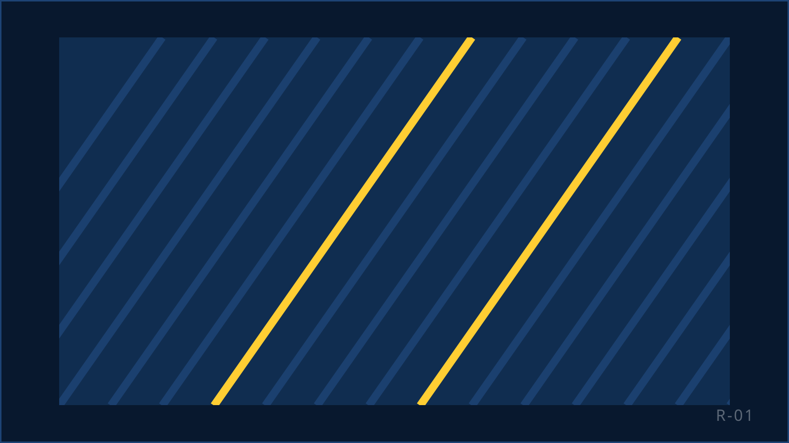

Leer verkopen. Verdien ernaar.
Tot €21 per uur, vijf dagen training en een supervisor die je elke dag beter maakt. In Rijswijk, naast de tram.

Wat je doet
Je belt. Namens Nederlandse merken en goede doelen, met mensen die daar toestemming voor gaven of al klant zijn. Je luistert, je stelt vragen, je doet een aanbod dat past. Soms bellen mensen jou, na een actie of een brief. Het doel is altijd hetzelfde: een gesprek dat ergens toe leidt.
Outbound
Jij belt de klant. Je legt uit waarom je belt, luistert naar wat iemand echt wil, en sluit af als het klopt. Dit is waar je verkopen leert.
Inbound
De klant belt jou, bijvoorbeeld na een campagne. Je helpt, legt uit en rondt af. Rustiger, maar net zo commercieel.
Voor wie je belt
Uitgevers, loterijen, goede doelen en abonnementsmerken. Bekende namen, geen onbekende webshops.
Er zijn targets. Die zijn per campagne helder, en je supervisor coacht je erop. Elke dag. KISS is ISO 27001-gecertificeerd, dus de klantgegevens waarmee je werkt zijn goed beveiligd. Dat merk je aan hoe de systemen zijn ingericht, niet aan gedoe.
Wat je verdient
Geen kleine lettertjes. Dit is het.
| Onderdeel | Wat het is |
|---|---|
| Basisuurloon | Tot €21 per uur, afhankelijk van je leeftijd. Staffel: BELONING — bevestigen |
| Reiskosten | €0,23 per kilometer vanaf 10 kilometer |
| Bonussen | Regelmatig bonusacties en prijzen. Structuur: BELONING — bevestigen |
| Trainingsweek | BELONING — bevestigen |
| Pauzes | BELONING — bevestigen |
| Uitbetaling | BELONING — bevestigen |
Wat je verdient hangt af van je uren en je leeftijd. Wil je precies weten waar jij op uitkomt? Dat rekenen we voor in het eerste telefoongesprek.
Hoe je start
Solliciteren
Twee minuten. Naam, telefoon, e-mail, hoeveel uur je wilt werken. Geen cv, geen brief.
HR belt je
RESPONSTIJD — bevestigen. Een kort gesprek: wie ben je, wat zoek je, wat kun je verwachten.
Kennismaking in Rijswijk
Je krijgt een rondleiding over de vloer en een korte presentatie. Je ziet wat het werk is voordat je ja zegt.
Vijf dagen training. Dan de vloer op.
Je begint pas met bellen als je weet wat je doet. Je eerste weken zit je supervisor naast je.
Wie je begeleidt

Angelo KollauTraining & Supervisie
Geeft je de vijfdaagse training en loopt daarna over de vloer. Als jouw gesprek beter kan, hoor je van hem hoe.
Sabrina DilloeHoofd supervisie
Stuurt de supervisors aan. Elke supervisor heeft een team van 10 tot 15 agents. Jij bent er daar één van, geen nummer in een zaal.
Wat collega's zeggen
Vijf beoordelingen van medewerkers op Google. Onbewerkt.
„Leuk en professioneel bedrijf. Ik ben goed opgevangen door mijn teamleider! En ik kijk uit naar de doorgroeimogelijkheden.”
„Ik vond de training hartstikke goed, heel netjes uitgelegd! De sfeer is ook super gezellig op de werkvloer, als je hulp nodig hebt is er altijd iemand in je buurt die je meteen helpt.”
„Positieve ervaring in de trainingsweek. Op de vloer een ontspannen en open werksfeer. Collega's heel divers, dat maakt ook dat je je welkom voelt ongeacht leeftijd, afkomst, geslacht en uiterlijk.”
„Iedereen is heel collegiaal en alles wordt duidelijk in stappen uitgelegd!”
„Een gezellig en vriendelijk team. Ze zijn behulpzaam. Je voelt je gelijk welkom.”
FOTO/QUOTE — medewerker, toestemming × 4: agent, senior, supervisor, student
Indeed: 4,0 van 5, op basis van 20 beoordelingen.
Eerlijk: dit is geen makkelijk werk
Je hoort vaak nee. Sommige dagen lopen niet. Je hebt een target en je supervisor ziet je cijfers. Wie dat niet wil, moet hier niet solliciteren.
Wat KISS eraan doet: je begint niet zonder vijf dagen training. Je supervisor heeft maximaal 15 mensen, dus je krijgt echt aandacht. Een slechte dag wordt besproken aan de hand van je gesprekken, met tips, niet met een preek. En je belt voor merken die mensen kennen, met mensen die toestemming gaven. Dat scheelt.
BELONING — bevestigen (regel over pauzes per shift en wat betaald wordt)
CIJFER — intern valideren (regel over proeftijd en wat er gebeurt als je target achterblijft: extra training, andere campagne)
Zo kom je er
Laan van Oversteen 20, Rijswijk. Meerdere tram- en buslijnen stoppen voor de deur. Met de auto: het pand ligt naast de snelweg en je parkeert gratis voor het gebouw. Reistijd vanuit Den Haag, Delft, Zoetermeer en Rotterdam: CIJFER — intern valideren.
Werktijden en uren
Je werkt minimaal 24 uur per week; 30 uur of meer heeft de voorkeur. Parttime naast je studie of fulltime als baan: allebei kan. Je geeft wekelijks je beschikbaarheid door en bepaalt zo je eigen rooster. Shifts: CIJFER — intern valideren.
Open vacature
-
Vacature · Rijswijk
Sales agent B2C
- Uren
- parttime of fulltime
- Beloning
- tot €21 per uur
Bekijk en solliciteer
Andere functie in gedachten? Solliciteer open
Eerlijke vragen, eerlijke antwoorden
Heb ik ervaring nodig?
Nee. Je krijgt vijf dagen training voordat je je eerste gesprek voert. Wat je wel meebrengt: goed Nederlands, zin om te bellen en de bereidheid om te leren van feedback.
Zijn er targets?
Ja. Per campagne is duidelijk wat een goede dag is. Je supervisor bespreekt je cijfers met je en luistert gesprekken terug om te zien waar het beter kan. Targets zijn er om je beter te maken, niet om je af te rekenen.
Wat als ik mijn target niet haal?
Dan kijken we samen waar het aan ligt: het gesprek, de campagne of het moment. CIJFER — intern valideren (regel over proeftijd en vervolgstappen bij achterblijvende resultaten)
Wordt de trainingsweek betaald?
BELONING — bevestigen
Worden pauzes betaald?
BELONING — bevestigen
Hoeveel uur moet ik minimaal werken?
24 uur per week. Meer mag, 30 uur of meer heeft onze voorkeur. Je vult wekelijks je beschikbaarheid in.
Kan ik thuiswerken?
Je start op de vloer in Rijswijk. Daar leer je het vak en daar zit je supervisor. Of thuiswerken daarna mogelijk is, bespreken we in het kennismakingsgesprek.
Wat voor contract krijg ik?
CIJFER — intern valideren (contractvorm, proeftijd)
Voor wie bel ik?
Voor Nederlandse uitgevers, loterijen, goede doelen en abonnementsmerken. Je hoort in het kennismakingsgesprek voor welke campagnes je start.
Hoe snel kan ik beginnen?
Solliciteren duurt twee minuten. HR belt je RESPONSTIJD — bevestigen. Daarna kennismaking, training en de vloer op. Doorlooptijd van sollicitatie tot eerste werkdag: CIJFER — intern valideren.
Klaar om te beginnen?
Twee minuten. Geen cv nodig.